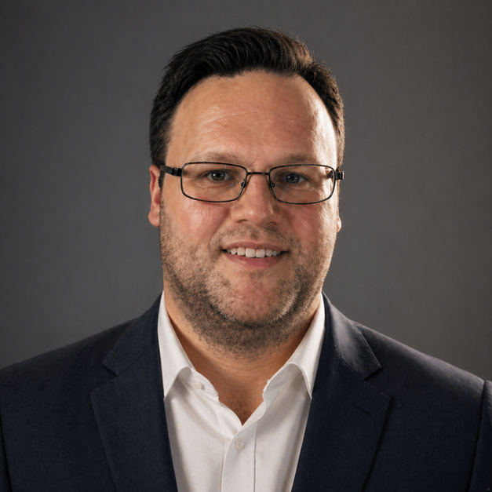

Mestrado em Engenharia Elétrica
2020Universidade Estadual de Campinas(UNICAMP)
Área de concentração:
Eletrônica, Microeletrônica e Fotônica

Diego Deotti é Mestre em Engenharia Elétrica pela Universidade Estadual de Campinas (UNICAMP, 2020), com dissertação sobre projeto, desenvolvimento e caracterização de um sensor de temperatura integrado em tecnologia CMOS. É Engenheiro Eletricista pela Universidade Regional de Blumenau (FURB, 2011), com formação inicial em eletrônica de potência e acionamento de máquinas elétricas. Sua trajetória em microeletrônica analógica iniciou-se no State Key Laboratory of Analog and Mixed-Signal VLSI da Universidade de Macau.
Atua como professor efetivo do Instituto Federal de São Paulo (IFSP), onde exerce também a função de Coordenador de Pesquisa e Inovação. Suas atividades de ensino e orientação concentram-se em circuitos eletrônicos, sistemas embarcados e instrumentação eletrônica, com envolvimento ativo de alunos de graduação e técnico em projetos de iniciação científica e desenvolvimento tecnológico.
Sua pesquisa atual concentra-se em circuitos integrados analógicos e mixed-signal, com ênfase em sensores inteligentes em tecnologia CMOS, leitura digital direta por modulação Σ∆ e codificação no domínio do tempo, e técnicas de cancelamento de offset e drift térmico. Tem interesse particular pela interface entre microeletrônica e eletrônica de potência e por encapsulamento avançado de circuitos integrados, incluindo TSV e microbumps.
Universidade Estadual de Campinas(UNICAMP)
Eletrônica, Microeletrônica e Fotônica
Universidade Regional de Blumenau(FURB)
Eletrônica de potência